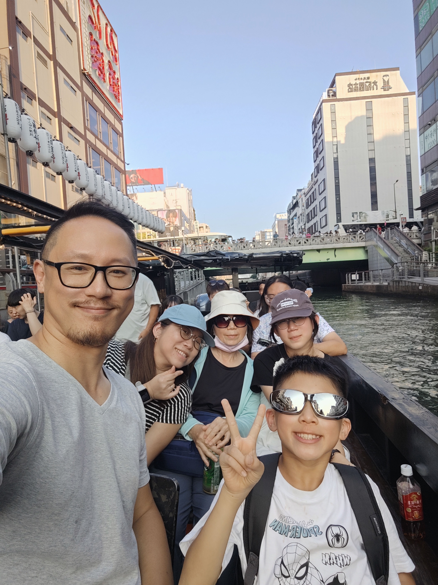
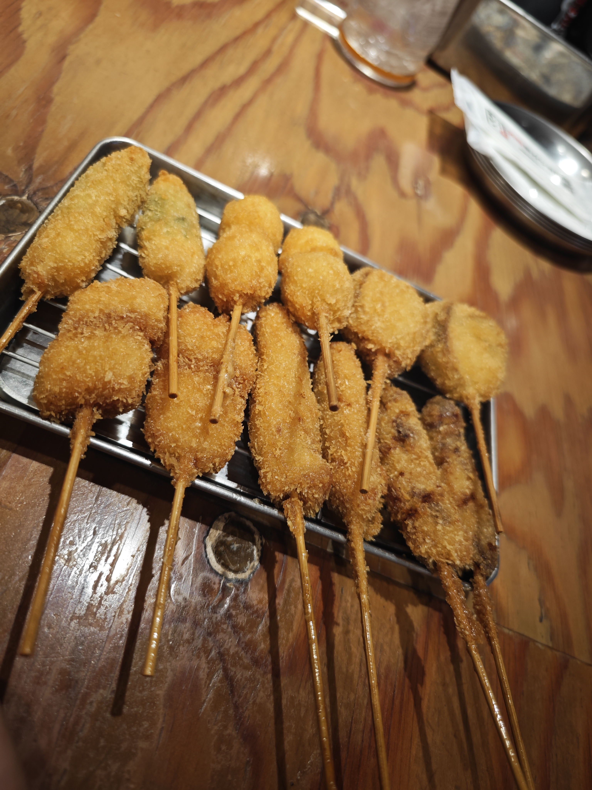
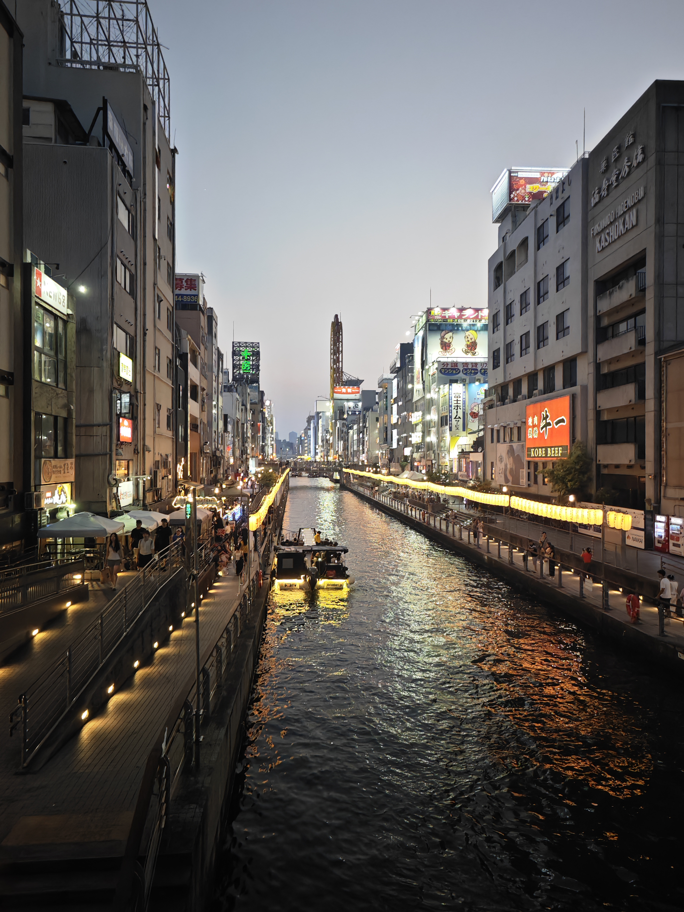
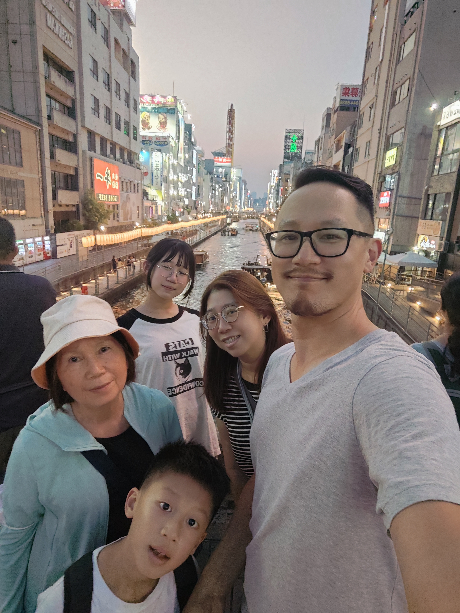
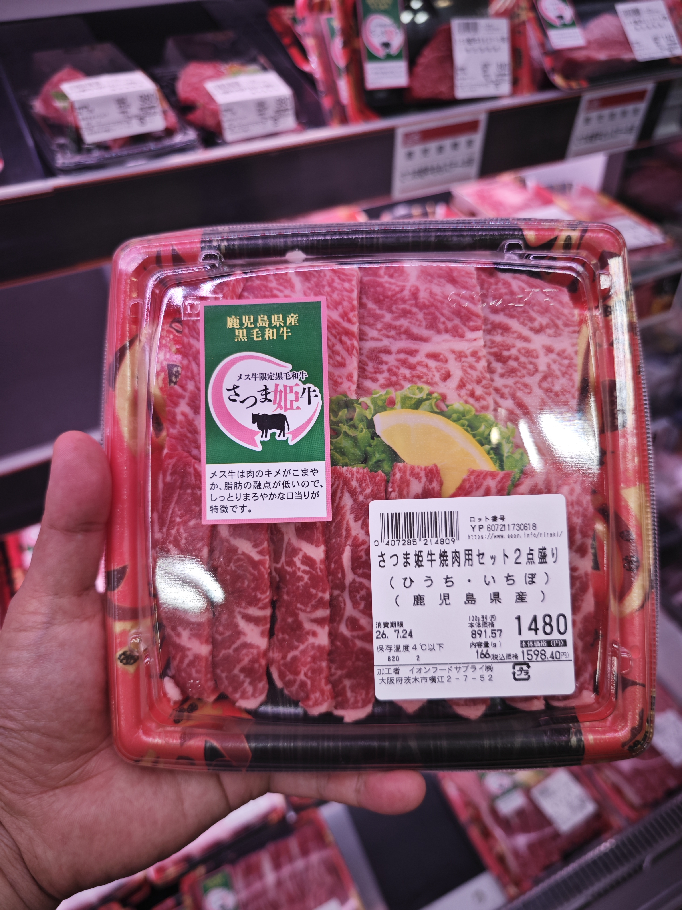
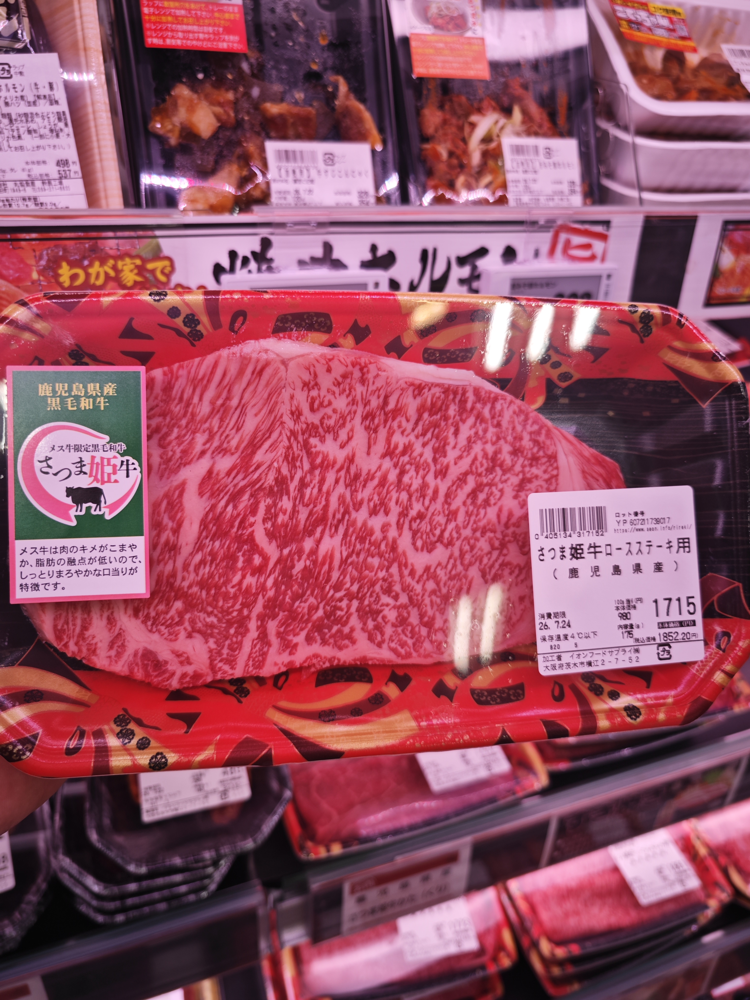
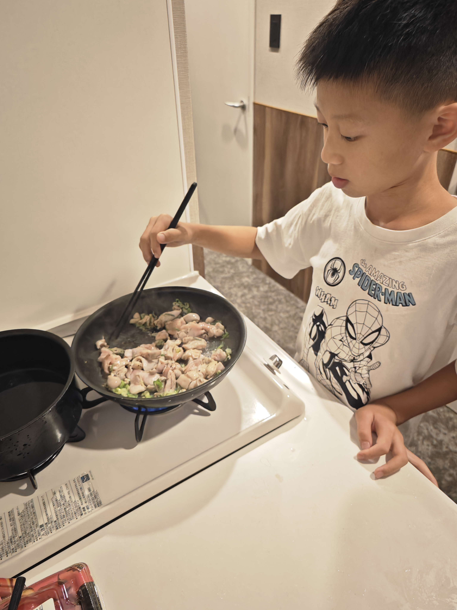
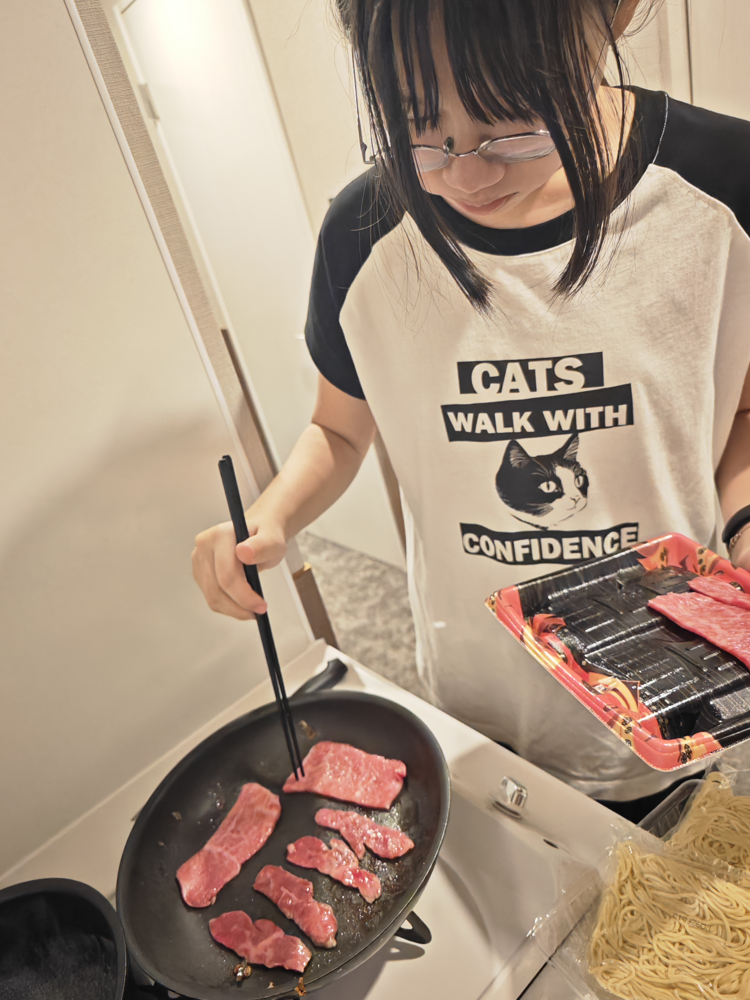

少拉車
每天集中同一區，降低轉乘與步行壓力，適合70歲長輩同行。
2026/7/21 Tue - 7/25 Sat · 5人家庭旅行
以道頓堀住宿為中心，不排 USJ、奈良、神戶，改成大阪市區深度版： 道頓堀遊船、大阪城後接黑門市場、海遊館、天神橋筋商店街、阿倍野夜景與日本橋動漫。

Plan Logic
每天集中同一區，降低轉乘與步行壓力，適合70歲長輩同行。
保留天神橋筋商店街、玉出超市、晚間水果甜點採買。
看鯨鯊與搭摩天輪，刪掉搭船與附屬景點，時間更乾淨。
利用公寓式住宿廚房，一晚採買黑毛和牛、水果與沙拉回房間料理。
島之內／日本橋／道頓堀步行圈，適合作為每天回飯店休息與採買基地。
不買 JR Pass 或大阪周遊卡。機場搭南海電鐵至天下茶屋轉堺筋線；市區交通刷 ICOCA，景點採單點門票。
可走難波八阪神社、心齋橋與難波最後採買；體力足夠再加臨空城。
Daily Timeline
Day 1 · 7/21 Tue
入境後搭南海電鐵到天下茶屋，站內轉 Osaka Metro 堺筋線到日本橋。行李先寄放，輕裝開始第一天。
KIX → 南海電鐵 → 天下茶屋 → Osaka Metro 堺筋線 → 日本橋
先放行李、補水休息，再從住宿步行到道頓堀河畔，準備搭遊船看河岸街景。
搭船從水面看道頓堀、戎橋與兩岸招牌，傍晚光線適合先拍全家合照。
在河岸拍夜景與合照，晚餐改吃串炸，節奏比排大型餐廳更輕鬆。
買到鹿兒島黑毛和牛與配菜，回公寓用廚房料理，補上這趟很有生活感的一餐。
小孩一起下廚煎肉，搭配麵、飲料或水果收尾。今天就不再排黑門市場，保留體力給明天大阪城。
Today Photos
從道頓堀遊船、河岸夜景到串炸與公寓和牛晚餐，八張照片都放在今天行程中。








Day 2 · 7/22 Wed
便利商店飯糰、咖啡、麵包即可。夏天不要一早就吃太重。
主攻天守閣外觀、護城河與拍照。若天氣太熱，天守閣登樓可視現場體力決定。
長堀橋 → 大阪 Metro 長堀鶴見綠地線 → 森之宮
大阪城結束後回日本橋／難波，去黑門市場補 Day 1 沒吃到的海鮮、玉子燒、現切水果或壽司。
森之宮 / 谷町四丁目 → Osaka Metro → 日本橋 → 黑門市場
黑門市場吃完後不要硬逛，先回住宿午休、洗澡與整理照片，避開下午最熱的時段。
Loft、Bic Camera、高島屋、日本橋電電城都可作為短程選項；若大家累了，這段直接取消。
依黑門市場午餐份量決定：簡單拉麵、定食、燒肉或回飯店吃水果甜點都可以。


Day 3 · 7/23 Thu
日本橋站搭千日前線到阿波座，轉中央線到大阪港站，步行到海遊館。
日本橋 → 阿波座 → 大阪港 → 海遊館
預留約3小時。全程室內，這天是最適合夏天避暑的主景點。
壽司、定食、輕食皆可。不要安排聖瑪麗亞號觀光船，也不排 LEGOLAND。
一圈約15分鐘，重點看大阪灣與港口，不需要在天保山逛太久。
Animate 買新品，駿河屋與 Mandarake 挖二手公仔，Joshin 看模型與玩具。小孩想逛久，長輩可先回飯店休息。
串炸、燒肉、壽司或拉麵。回飯店前只補水果與甜點，不買生食。
Day 4 · 7/24 Fri
以短暫參觀與拍照為主，接著直接走進天神橋筋商店街。
日本橋 → Osaka Metro 堺筋線 → 南森町
中村屋可樂餅、前田豆腐店、玉出超市、天滿市場。這天取代木津市場，主打大阪在地生活感。
回轉壽司適合五人，選擇多、翻桌快。若人太多，就改附近定食或拉麵。
Grand Front、Yodobashi Camera、Animate 梅田。若 Day 3 動漫還沒買夠，這裡補最後一輪；16:30 左右前往天王寺。
南森町 / 扇町 / 天滿 → 梅田區
暫定仙臺たんや利久。五人建議電話預約 17:00；晚餐控制一小時，直接在同棟接 HARUKAS 300。
晚餐後直接上展望台，從傍晚待到天黑。建議先買電子票，室內冷氣對長輩較友善。
梅田 → Osaka Metro 御堂筋線 → 天王寺；HARUKAS 與天王寺站相連
Day 5 · 7/25 Sat
巨型獅子頭拍照，停留20-30分鐘即可。夏天早一點去比較舒服。
藥妝、UNIQLO、GU、Loft、Bic Camera、唐吉訶德。伴手禮以常溫零食為主。
若還想吃桃子、葡萄、哈密瓜，可在難波或心齋橋附近買當天吃得完的量；不要買需要帶回台灣的生鮮。
體力好就到 Rinku Premium Outlets；若大家累了，留在難波吃晚餐後直接去機場。
23:35 起飛，20:30 左右到機場很充裕。廉航行李與登機時間請以航空公司通知為準。
南海難波 → 關西機場；若去臨空城，臨空城 → KIX 一站